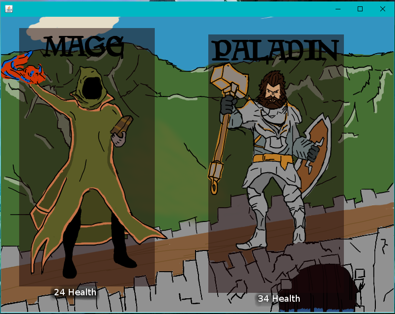
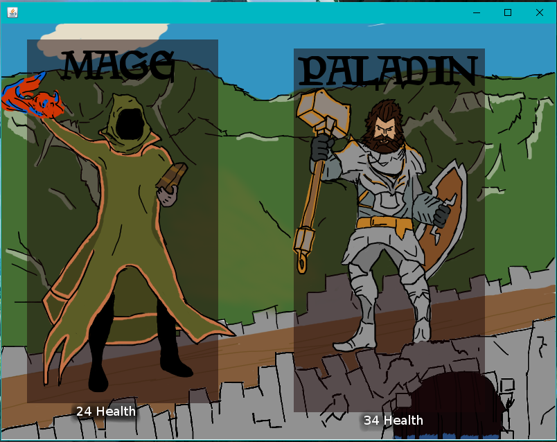
The program starts with a main menu that only has one option but, brings you to the next menu that lets you choose which character you want to select. Each character has 6 unique spells that will have an effect in a fight. You can only choose 3 of these spells per playthrough, some are more helpful then others.
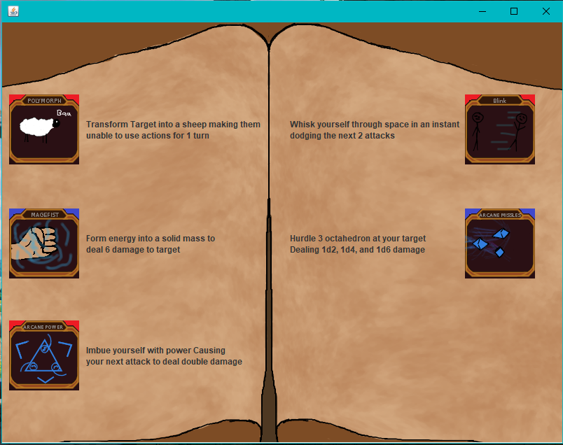 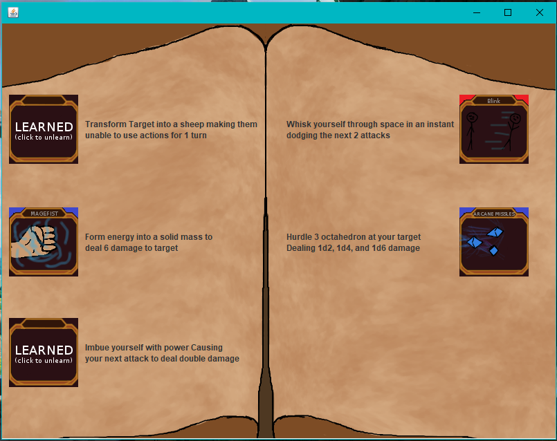 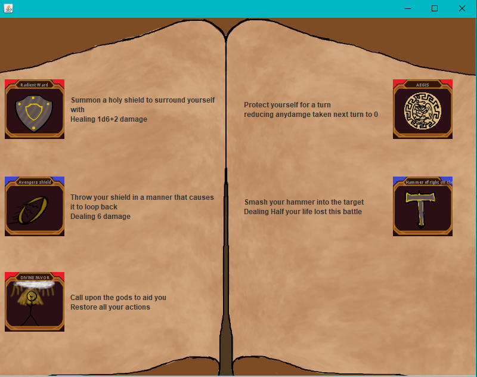The order in which you pick you spells will affect their order on the screen. I did this to learn about how games allow things like rebinding keys and customizing HUDs/interfaces. Each spell also has a cooldown, some you can use every turn, others only once every 2 or 3 turns. This is also where the graphics go down hill.
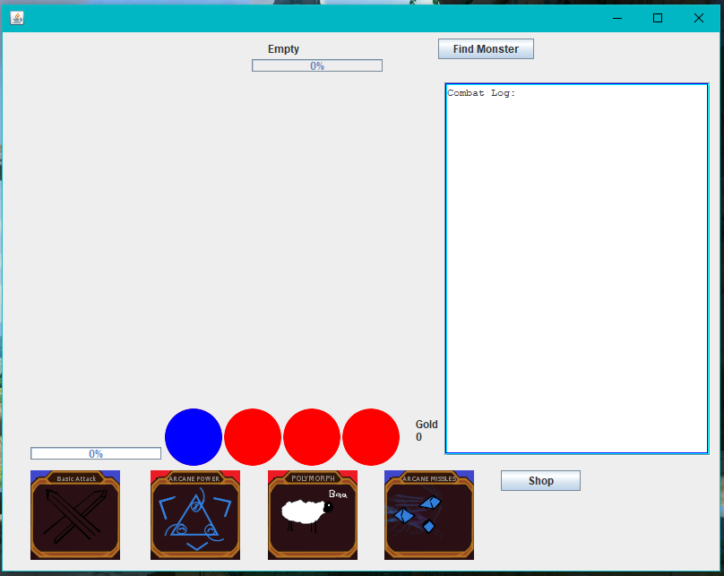 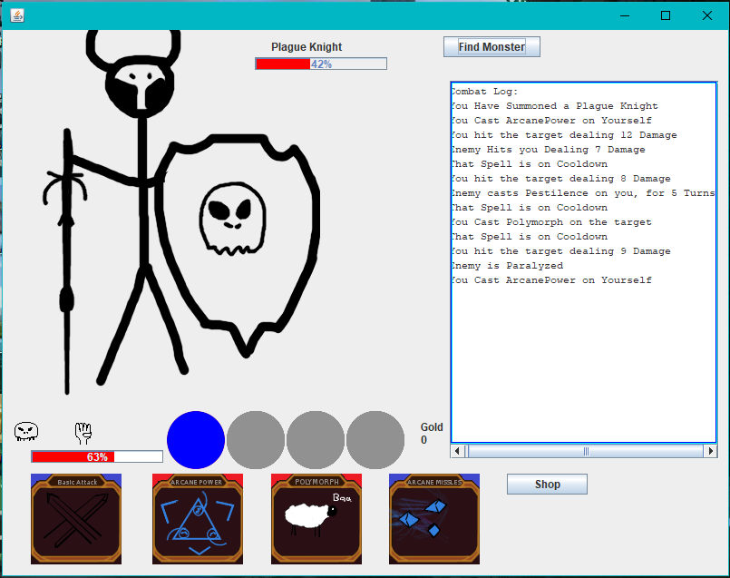 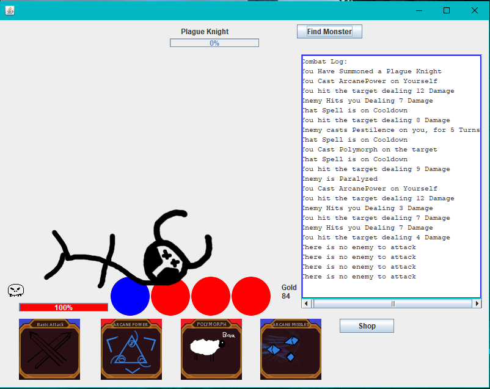 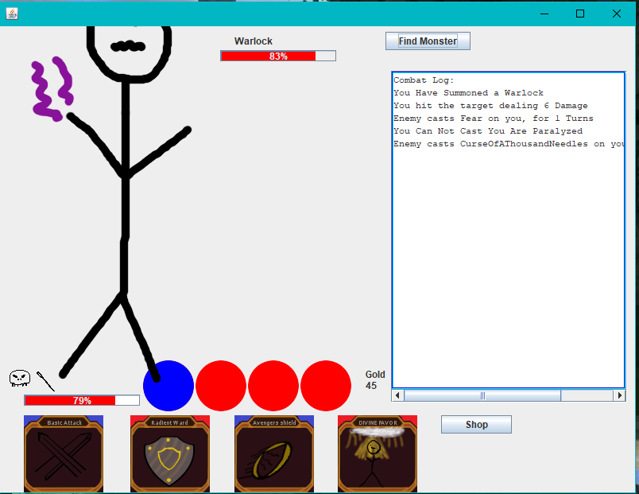Once your in the game you’ll see a lot of things on screen. The very bottom is your spells, while in combat clicking them will use them. Basic attack attacks with your weapon instead of a spell. Above your spells you have a health bar as a percentage, and your actions (the circles). The blue action is used once on your turn (it will end your turn), the 3 red actions are used once per fight (it will remain your turn). Spells are color-coded showing which action they will use. Above your health bar status effects will show up, some weaken you, some damage you every round, some make you stronger.
 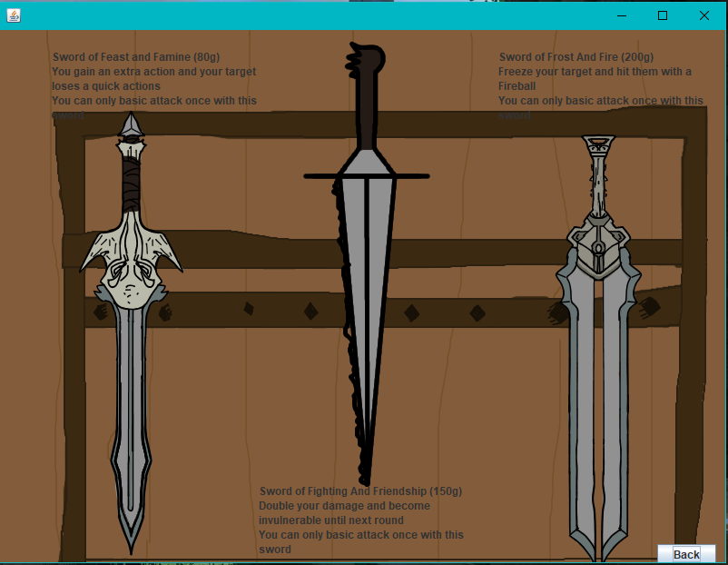
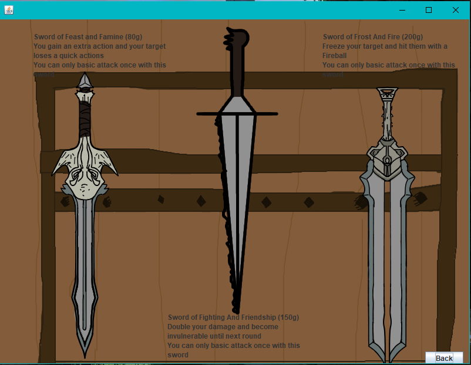
When you defeat an enemy, you get gold that you can use to buy weapons. The weapons each have the effect of two spells and do some damage. The player can only have one sword equipped at a time, and only attack once per fight